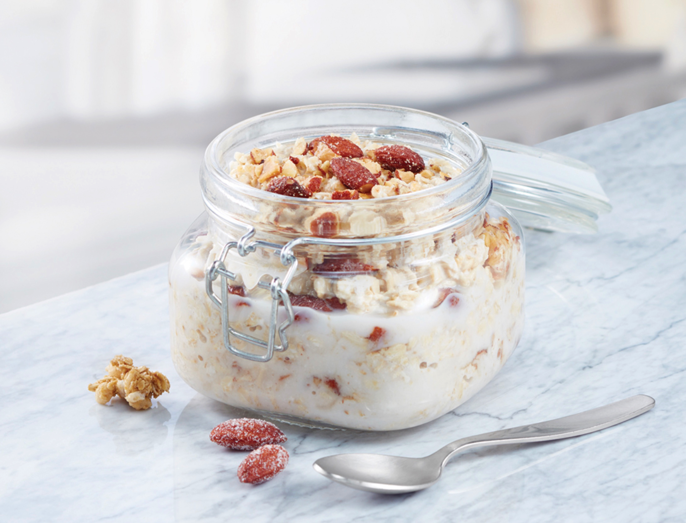

Healthy Breakfast - Oats!

Healthy, quick and delicious - exactly what I thrive to be.
Ingredients
- 1 cup Almond Breeze Vanilla almond milk or soy milk
- 1 cup rolled oats
- 1/4 cup granola (original)
- 3 tablespoons coarsely chopped honey roasted almonds (optional)
Directions
- Stir together almond milk and oats in a medium bowl. Separate into separate jars
if desired. Cover and refrigerate 8 hours to overnight.
- When ready to eat, top with granola and almonds as per taste.